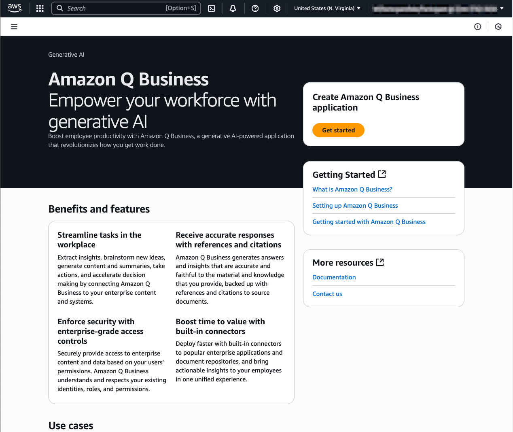
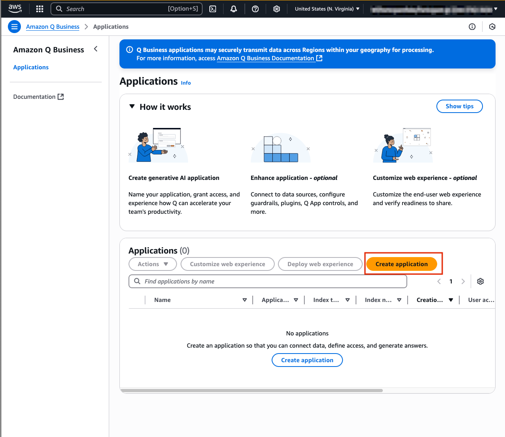
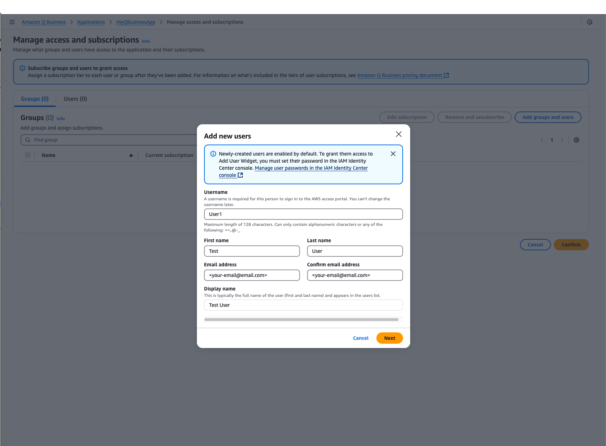
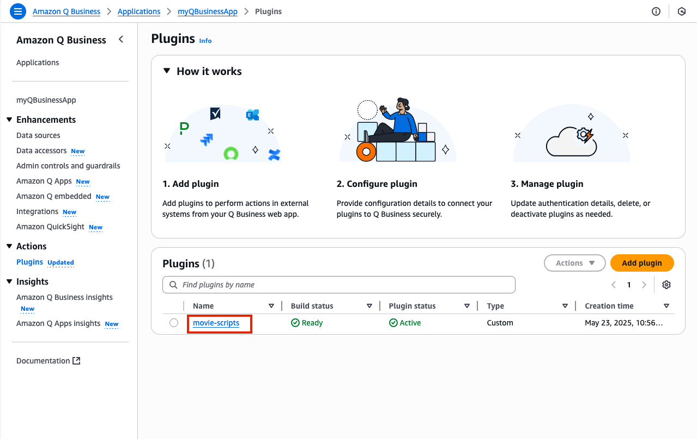
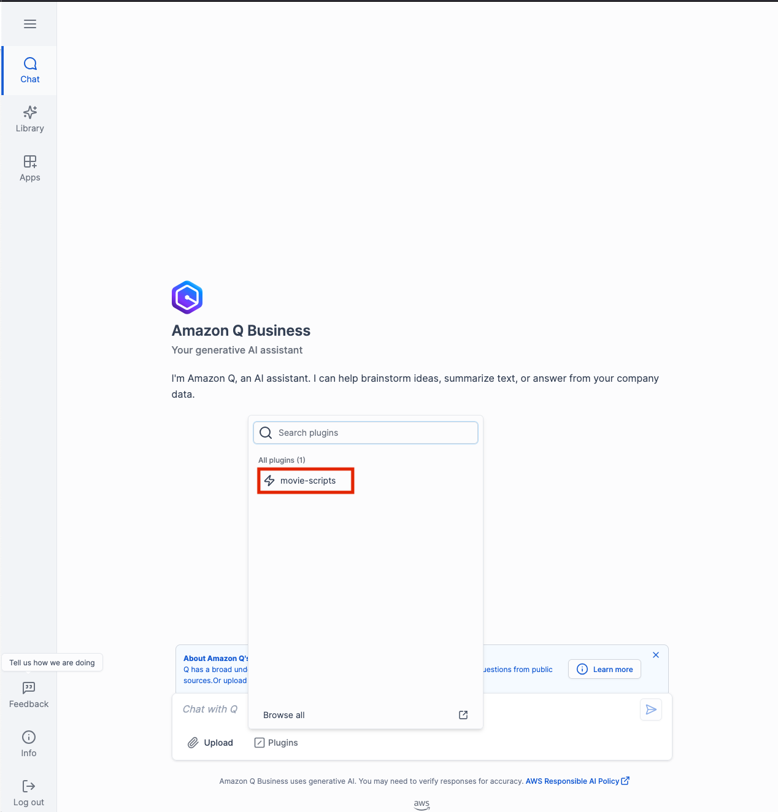
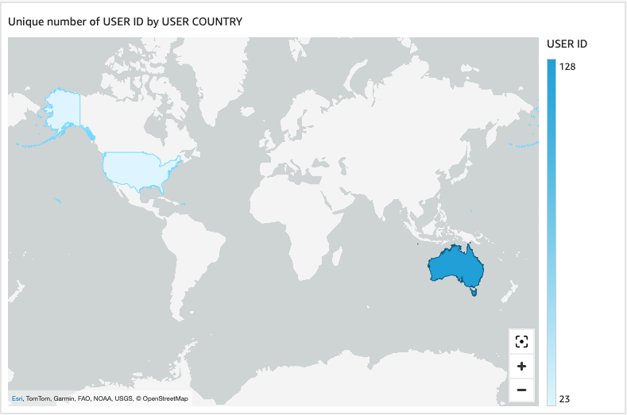
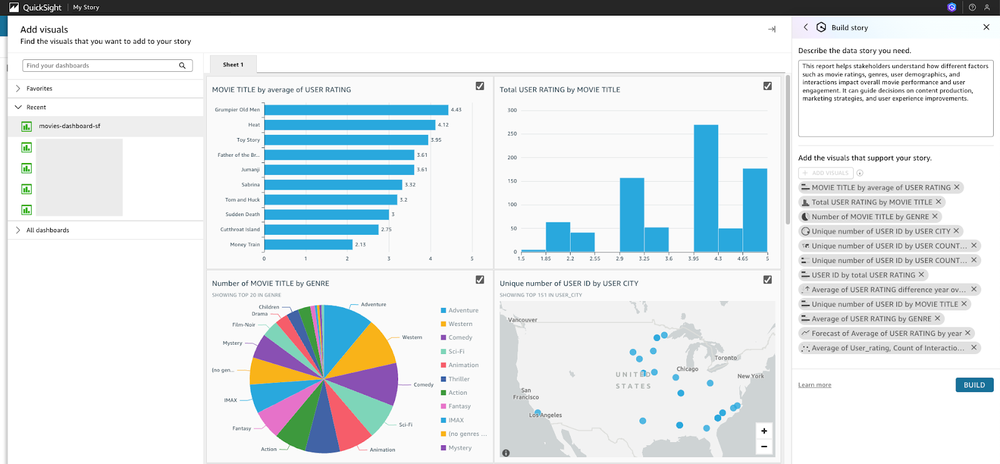

Cortex Agents orchestrate across both structured and unstructured data sources to deliver insights. They plan tasks, use tools to execute these tasks, and generate responses. Agents use Cortex Analyst (structured) and Cortex Search (unstructured) as tools, along with LLMs, to analyze data. Cortex Search extracts insights from unstructured sources, while Cortex Analyst generates SQL to process structured data. A comprehensive support for tool identification and tool execution enables delivery of sophisticated applications grounded in enterprise data.
Amazon Q Business is a generative AI assistant that transforms how work gets done in your organization. With specialized capabilities for software developers, business intelligence analysts, contact center employees, supply chain analysts, and anyone building with AWS, Amazon Q helps every employee get insights on their data and accelerate their tasks. Leveraging Amazon Q's advanced agentic capabilities, companies can streamline processes, get to decisions faster, and help employees be more productive.
Cortex Search: A Snowflake service that combines advanced search capabilities to find relevant information within any text data stored in your organization's Snowflake environment. It takes care of all the complex technical processes automatically, allowing organizations to implement powerful search features without worrying about the underlying technical infrastructure. Amazon Q Business Plugin: An integration tool that connects Amazon Q Business with other business services and data sources through secure, customizable connections. These plugins enhance Amazon Q's functionality by allowing it to safely access and work with various company systems and services while maintaining security standards. Amazon Q Business Chat Interface: The main user interface where you can interact with Amazon Q Business through a conversational format to access company information and services. Users can ask questions and make requests using natural language, and the interface provides responses by gathering and synthesizing information from connected business systems.
Use Case
Users will create an intelligent search system for movie script PDFs and structured movie data using Snowflake Cortex AI and Amazon Q Business. Snowflake Cortex AI will process and index the unstructured PDF movie scripts, making them searchable through advanced text analysis. Amazon Q Business will then provide a natural language interface, allowing users to ask questions about the scripts in conversational language and receive relevant answers. For example, users could ask about specific dialogues, scene descriptions, or character interactions across different movie scripts, and the system will retrieve and present the relevant information. This implementation demonstrates how to transform raw PDF scripts into an interactive, queryable knowledge base that understands and responds to complex questions about movie content.
The end-to-end workflow will look like this: 
Ingest data into structured and unstructured data stores then:
- Create a Cortex Analyst service with structured data with a Semantic Model.
- Using Snowflake functions prepare the data and create a Cortex Search service with unstructured data.
- Create a Cortex Agent that brokers the decision on when to use each service (as well as other GenAI functions (potentially))
- Amazon Q for Business is connected to the Cortex Agents service with a plugin using oauth authentication.
- Users can use Amazon Q for Business with Cortex securely and seamlessly.
- (optional and not covered in this lab) Along with the Cortex Plugin users can access other AWS data and services through Amazon Q for Business
Prerequisites
- Familiarity with Snowflake and a Snowflake account with Cortex Search.
- Familiarity with AWS and an AWS account.
What You'll Learn
- Using Cortex Search along with complimentary functions in Snowflake.
- Using Cortex Analyst and semantic models in Snowflake.
- Using Cortex Agents.
- Using Amazon Q to leverage generative AI to get quick answers from your data.
- Connect Amazon Q to Snowflake Cortex Search with a custom plugin.
What You'll Need
- A free Snowflake Account
- AWS Account with access to Q
- For the sake of the lab it is best if both platforms have access to the public internet and are not in a virtual network
What You'll Build
You will build an end-to-end copilot workflow on unstructured data in Snowflake
- to load data to Snowflake via Snowsight
- to extract unstructured data and create chunks in Snowflake
- to create a Snowflake Cortex Search Service on unstructured data
- to create a semantic model with Cortex Analyst on structured data
- to create a Cortex Agent using the Search and Analyst services
- to create a connection from Amazon Q to Cortex Search with Oauth authentication
In this section, we'll set up Amazon Q Business , a generative AI-powered assistant that enables natural language interaction with business data. We'll create and configure a Q Business application that will connect with our Snowflake database, enabling intelligent querying of our movie script data. While we're using movie scripts for this example, these same steps can be applied to analyze any type of business documents in your organization.
Create your Q Business Application
- Open Amazon Q Business on the console and select Get Started 
- Select Create application
- Provide the name myQBusinessApp for your application under Application Name myapp. You may review all the other settings, but for now we will not change the default configuration.

- To create our Q Business application we need to ensure we have Identity Center set up to help us manage user access to the app. As you scroll through the configuration select the Create account instance button to create an Identity Center instance for the AWS account and link our application.

- Once you have scrolled to the very bottom, select the Create button located in the right corner.co

Congratulations you have now created your first Q Business App!
Copy the Deployed URL and save for later
After clicking Create, you should have been automatically routed to your QBusinessApp home page. Here you can see all of the information regarding your application. Be sure to copy the Deployed URL and store this in a notes page or text file to the side, we will need this later to set up our authorization between Snowflake and Q Business. 
Create an IAM User
Before we continue on, we need to make sure we have configured a user to access our Q Business Application.
- To first create a user select Manage user access on your Q Business App web page.

- Next, select Add groups and users, then continue by selecting the Add new users button in the pop up window.

- Configure your new user with the following information, or feel free to use your own name. Please ensure that your email is an email you have access to. 
- Continue through the user management process by selecting, Add, then Assign .
- You should then be routed to the Manage access and subscriptions webpage where your user details will be available for you to review. One you are happy with your use details select Confirm.

- By this time you should have received an email in your inbox from no-reply@login.awsapps.com. Please open this email and select Accept invitation.

- Follow the prompts to create a password for your user and to register an MFA device. Please do not forget your password you will need it later to log in!


Well done! From this section of the lab you have successfully configured your Q Business Application and created a user that has permissions to access the application.
In this section, we'll create the foundation for an AI-powered movie data analysis system. By configuring Snowflake Cortex Search, Cortex Analyst and a Cortex Agent, you'll build a system that can process, store, and intelligently search through movie scripts. Once completed, this setup will allow users to ask natural language questions about movie content and receive relevant answers through Amazon Q Business.
Upload Data to Snowflake and Create Cortex Search Service
- Download the movie script for Toy Story, by clicking here and selecting the download button. This PDF will be our test data for the search system and Q Business Application.
- Navigate to the Snowflake UI and create a new SQL worksheet where we'll run our setup commands.

- Create database MOVIELENS and schema, table for the movie and load the move dashboard data from a csv file.
CREATE OR REPLACE DATABASE movielens;
CREATE OR REPLACE SCHEMA movielens.movies;
CREATE OR REPLACE SCHEMA movielens.data;
CREATE OR REPLACE WAREHOUSE workshopwh;
USE DATABASE movielens;
USE SCHEMA data;
CREATE TABLE movies_dashboard (
movie_id NUMBER,
movie_title VARCHAR,
movie_release_year INTEGER,
genre VARCHAR,
user_rating FLOAT,
rating_timestamp TIMESTAMP_NTZ,
user_id NUMBER,
user_firstname VARCHAR,
user_lastname VARCHAR,
user_city VARCHAR,
user_state VARCHAR,
user_country VARCHAR,
user_email VARCHAR,
user_phonenumber VARCHAR,
interaction_timestamp NUMBER ,
interaction_type VARCHAR
);
CREATE OR REPLACE STAGE MOVIEDASHBOARD
URL='s3://hol-qs-bucket/'
FILE_FORMAT = (TYPE = 'csv');
COPY INTO movies_dashboard FROM @MOVIEDASHBOARD/movies_dashboard.csv
FILE_FORMAT=(TYPE = 'csv' FIELD_DELIMITER = ',' SKIP_HEADER = 1);
USE WAREHOUSE workshopwh;
USE DATABASE movielens;
USE SCHEMA data;
CREATE STAGE DOCS
DIRECTORY = ( ENABLE = true )
ENCRYPTION = ( TYPE = 'SNOWFLAKE_SSE' );
- Now that we have our database ready, we can also upload the script files to the PUBLIC schema of the DOCS stage in the SCRIPT_DB database. To do this select Data -> MOVIELENS -> DATA -> Stages -> DOCS. Click +FILES to upload the movie script you have previously downloaded.

Once uploaded you should be able to see your PDF file in your webpage to validate that you have successfully uploaded the movie script.
- Run the following code to process your movie scripts. This code does two things: first, it extracts text from the PDFs into a table (SCRIPT_TABLE), then divides that text into searchable segments(chunks) stored into a new table SCRIPT_TABLE_CHUNK
--Create Table for text data
CREATE OR REPLACE TABLE SCRIPT_TABLE AS
SELECT
'toy-story-script' as doc,
SNOWFLAKE.CORTEX.PARSE_DOCUMENT(@MOVIELENS.DATA.DOCS, 'toy-story-1995.pdf', {'mode': 'LAYOUT'}) as script_text;
-- Create table with chunked text
CREATE OR REPLACE TABLE SCRIPT_TABLE_CHUNK AS
SELECT
TO_VARCHAR(c.value) as CHUNK_TEXT, DOC
FROM
SCRIPT_TABLE,
LATERAL FLATTEN( input => SNOWFLAKE.CORTEX.SPLIT_TEXT_RECURSIVE_CHARACTER (
TO_VARCHAR(script_text:content),
'none',
700,
100
)) c;
SELECT * FROM SCRIPT_TABLE_CHUNK;
Note: The code splits the text into 700-token chunks with 100-token overlaps. These numbers can be adjusted later to optimize your search results. For more details about text processing options, see the Snowflake documentation.
- Now we are ready to create a Cortex Search Service by running the code on the CHUNK_TEXT field. This service will enable intelligent searching across your processed movie scripts:
-- Create Search Service
CREATE OR REPLACE CORTEX SEARCH SERVICE SCRIPT_SEARCH_SRV
ON CHUNK_TEXT
ATTRIBUTES DOC
WAREHOUSE = HOL_WH
TARGET_LAG = '30 day'
AS (
SELECT CHUNK_TEXT as CHUNK_TEXT, DOC FROM SCRIPT_TABLE_CHUNK);
CREATE OR REPLACE STAGE models DIRECTORY = (ENABLE = TRUE);
The service automatically updates every 30 days and allows filtering by document name using the DOC attribute..
Set up Cortex Analyst
- Download the movie_dashboard.yaml (NOTE: Do NOT right-click to download.)
- Navigate to Data » Databases » MOVIELENS » DATA » Stages » MODELS
- Click + Files in the top right

- Browse and select movie_review.yaml file
- Click Upload
Well Done! with this upload you have now created a Cortex Analyst service.
Set up the Agent
In this section we create a stored procedure that passes a Cortex Agent spec to the Cortex API that utilizes the Search and Analyst Services we just created.
CREATE OR REPLACE PROCEDURE CALL_CORTEX_AGENT_PROC(query STRING, limit INT)
RETURNS VARIANT
LANGUAGE PYTHON
RUNTIME_VERSION = '3.9'
PACKAGES = ('snowflake-snowpark-python')
HANDLER = 'call_cortex_agent_proc'
AS
$$
import json
import _snowflake
import re
from snowflake.snowpark.context import get_active_session
def call_cortex_agent_proc(query: str, limit: int = 10):
session = get_active_session()
API_ENDPOINT = "/api/v2/cortex/agent:run"
API_TIMEOUT = 50000
CORTEX_SEARCH_SERVICES = "MOVIELENS.DATA.SCRIPT_SEARCH_SRV"
SEMANTIC_MODELS = "@MOVIELENS.DATA.MODELS/movie_dashboard.yaml"
query = (
"You are an assistant tasked with answering questions about the movie Toy Story. "
"Please summarize and answer this question concisely: " + query
)
payload = {
"model": "claude-3-5-sonnet",
"messages": [{"role": "user", "content": [{"type": "text", "text": query}]}],
"tools": [
{"tool_spec": {"type": "cortex_analyst_text_to_sql", "name": "analyst1"}},
{"tool_spec": {"type": "cortex_search", "name": "search1"}}
],
"tool_resources": {
"analyst1": {"semantic_model_file": SEMANTIC_MODELS},
"search1": {"name": CORTEX_SEARCH_SERVICES, "max_results": limit}
}
}
try:
resp = _snowflake.send_snow_api_request(
"POST", API_ENDPOINT, {}, {}, payload, None, API_TIMEOUT
)
if resp["status"] != 200:
return {"error": resp["status"]}
response_content = json.loads(resp["content"])
return process_cortex_response(response_content, session)
except Exception as e:
return {"error": str(e)}
def clean_text(text):
""" Cleans up unwanted characters and symbols from search results. """
text = re.sub(r'[\u3010\u3011\u2020\u2021]', '', text)
text = re.sub(r'^\s*ns\s+\d+\.*', '', text)
return text.strip()
def process_cortex_response(response, session):
""" Parses Cortex response and executes SQL if provided. """
result = {"type": "unknown", "text": None, "sql": None, "query_results": None}
full_text_response = []
for event in response:
if event.get("event") == "message.delta":
data = event.get("data", {})
delta = data.get("delta", {})
for content_item in delta.get("content", []):
content_type = content_item.get("type")
if content_type == "tool_results":
tool_results = content_item.get("tool_results", {})
for result_item in tool_results.get("content", []):
if result_item.get("type") == "json":
json_data = result_item.get("json", {})
if "sql" in json_data:
result["type"] = "cortex_analyst"
result["sql"] = json_data["sql"]
result["text"] = json_data.get("text", "")
try:
query_results = session.sql(result["sql"]).collect()
result["query_results"] = [row.as_dict() for row in query_results]
except Exception as e:
result["query_results"] = {"error": str(e)}
elif "searchResults" in json_data:
result["type"] = "cortex_search"
formatted_results = []
for sr in json_data.get("searchResults", []):
search_text = clean_text(sr.get("text", "").strip())
citation = sr.get("citation", "").strip()
if search_text:
if citation:
formatted_results.append(f"- {search_text} (Source: {citation})")
else:
formatted_results.append(f"- {search_text}")
if formatted_results:
full_text_response.extend(formatted_results)
elif content_type == "text":
text_piece = clean_text(content_item.get("text", "").strip())
if text_piece:
full_text_response.append(text_piece)
result["text"] = "\n".join(full_text_response) if full_text_response else "No relevant search results found."
return result
$$;
CALL call_cortex_agent_proc('what is the dinosaurs name in toy story?', 5);
Now you can access that stored procedure from external sources like Q for Business!
Set up Oauth
The final step is setting up OAuth authentication, this creates a secure connection between Snowflake and Amazon Q Business nd ensures that only authorized requests can access your movie script data.
- Run the following code to create the security integration. This code creates a secure connection that will allow Amazon Q Business to safely access your Snowflake data. You'll need to replace with the URL of your Amazon Q application (which you have copied earlier from the AWS Console).
--create custom oauth
CREATE OR REPLACE SECURITY INTEGRATION Q_AUTH_HOL
TYPE = OAUTH
ENABLED = TRUE
OAUTH_ISSUE_REFRESH_TOKENS = TRUE
OAUTH_REFRESH_TOKEN_VALIDITY = 3600
OAUTH_CLIENT = CUSTOM
OAUTH_CLIENT_TYPE = CONFIDENTIAL
OAUTH_REDIRECT_URI = '<Deployed URL>/oauth/callback';
GRANT USAGE on database MOVIELENS to role PUBLIC;
GRANT USAGE on SCHEMA DATA to role PUBLIC;
GRANT USAGE on CORTEX SEARCH SERVICE SCRIPT_SEARCH_SRV to role PUBLIC;
GRANT READ ON STAGE MODELS TO ROLE PUBLIC;
GRANT USAGE ON PROCEDURE CALL_CORTEX_AGENT_PROC(VARCHAR, NUMBER) TO ROLE PUBLIC;
GRANT USAGE ON WAREHOUSE WORKSHOPWH TO ROLE PUBLIC;
DESC INTEGRATION Q_AUTH_HOL;
SELECT SYSTEM$SHOW_OAUTH_CLIENT_SECRETS('Q_AUTH_HOL');

- After running the code, save these important credentials, we will need them later on!: OAUTH_CLIENT_ID from the results OAUTH_CLIENT_SECRET from the results Your Snowflake URL (find this by clicking your account name in the bottom left of the Snowflake UI, selecting your account,then view account details. Your snowflake URL is https:// + your Account/Server URL e.g. https://.snowflakecomputing.com) For more information about Snowflake's OAuth configuration, visit the Snowflake OAuth documentation.
Next, we'll create a Q Business Custom Plugin to connect our Q Business Application with the Cortex Search in Snowflake. This integration enables the Q Business chatbot interface to access and analyze the movie script data stored in Snowflake.
Create your Custom Plugin for Snowflake
- Navigate to the Plugins tab found in the left navigation menu in your Q App webpage and select Add Plugin


- Select Create custom plugin button in the top right of your Q application page

- Name the plugin movie-agent. and provide a description.For example:
plugin to connect to movie script data from snowflake. - Under API Schema select the Define with in-line OpenAPI schema editor
- Select YAML format and paste the following OpenAPI specification. Important: Please update these 3 values in the code:
- url:
- authorizationUrl: /oauth/authorize
- tokenUrl: /oauth/token-request As a reminder you can find your Snowflake URL by clicking your account name in the bottom left of the Snowflake UI, selecting your account, then view account details. Your snowflake URL is https:// + your Account/Server URL e.g. https://.snowflakecomputing.com
openapi: 3.0.0
info:
title: Cortex Agent via Stored Procedure
version: 1.0.0
servers:
- url: https://SFSENORTHAMERICA-HOL_MATTMARZILLO.snowflakecomputing.com
paths:
/api/v2/statements:
post:
summary: Call Cortex Agent stored procedure
description: Calls the stored procedure MOVIELENS.DATA.call_cortex_agent_proc(query, 5) using the SQL API.
parameters:
- in: header
name: X-Snowflake-Authorization-Token-Type
required: true
description: Customer Snowflake OAuth header
schema:
type: string
enum: ["OAUTH"]
requestBody:
required: true
content:
application/json:
schema:
$ref: '#/components/schemas/QueryRequest'
responses:
'200':
description: Successful stored procedure execution
content:
application/json:
schema:
$ref: '#/components/schemas/QueryResponse'
security:
- oauth2: []
components:
schemas:
QueryRequest:
type: object
required:
- statement
- warehouse
- role
properties:
statement:
type: string
description: The SQL statement to execute
warehouse:
type: string
default: WORKSHOPWH
example: WORKSHOPWH
role:
type: string
default: PUBLIC
example: PUBLIC
example:
statement: CALL MOVIELENS.DATA.call_cortex_agent_proc("What is Toy Story about?", 5)
warehouse: WORKSHOPWH
role: PUBLIC
QueryResponse:
type: object
description: The response returned from the Snowflake SQL API.
properties:
data:
type: array
description: The result rows returned.
items:
type: object
additionalProperties: true
request_id:
type: string
description: ID of the SQL request.
required:
- data
- request_id
securitySchemes:
oauth2:
type: oauth2
flows:
authorizationCode:
authorizationUrl: https://SFSENORTHAMERICA-HOL_MATTMARZILLO.snowflakecomputing.com/oauth/authorize
tokenUrl: https://SFSENORTHAMERICA-HOL_MATTMARZILLO.snowflakecomputing.com/oauth/token-request
scopes:
session:role:PUBLIC: Use PUBLIC role in Snowflake
Some things to note*
- The path defined in the OpenAPI schema assumes you set up your Stored Procedure in the MOVIELENS database, in the DATA schema, - if you used different names in your Snowflake setup, you'll need to modify these values accordingly.
- The description field under the POST method is crucial as Q uses this to determine when to route questions to this plugin.
- After you have updated the YAML code, ensure that under the Authentication header, Authentication required has been selected.
- Next, look to the AWS Secrets Manager Section here:
- Select Create and add new secret
- Name your secret (e.g., "movie-scripts")
- Enter your Snowflake Client ID and Client Secret we have copied from the previous setup
- Add the OAuth callback URL (same as OAUTH_REDIRECT_URI from Snowflake security integration)


- Finally, Click the Create button then Add Plugin to complete your plugin setup. You can validate that your plugin has been set up successfully when the Plugin Status is updated to green.

Great Job! Your plugin is now ready to use within Q Business to query movie script data from Snowflake
Testing your Q Business Application
- In the Q Business console navigate to the script-plugin on the left menu and select your plugin movie-scripts
- Now in your movie-scripts page select Preview web experience in the top right corner of your screen. This will open a preview of your web application's UI.

- For now, feel free to leave the default sessions as they are and select View web experience.

- Here you will be directed to your application, and asked to sign in. Enter the credentials for your user and log in !
- Please note: Your username is the one you specified when creating the first user, not your email address.
- Once you have logged in simply select the Plugins option below the chat window and click on your plugin movie-scripts. This tells Q Business to use information from this specific source. 
- Congratulations it's now time to test your application. Lets start with an example question:
- what is the average rating for an adventure movie?

- When you ask your first question you'll be asked to authorize the connection and be redirected to Snowflake. Sign in and select Allow. You'll then be automatically routed back to your Q Web app where Q will output an answer to your question.


- Now it's your turn to explore! Try asking detailed questions about the movie. Q Business pulls answers directly from the script text, so you're getting the same information you would if you manually searched through the screenplay. Here are some questions to get you started:
- ask to return the sql from the previous request.
- who is the primary villain in Toy Story
- who are the primary characters int Toy Store
- what are the highest rated movies in the database
- ask to return the sql from the preevious request.
- Congratulations! You've successfully built an intelligent script analysis system, integrated Q Business with Snowflake, leveraged GenAI for natural language querying, and became a certified Toy Story expert in the process!
OPTIONAL Duration: 20
This lab introduces participants to Amazon Q in QuickSight, dashboard-authoring capabilities empower business analysts to swiftly build, uncover, and share valuable insights using natural language prompts. Simplify data understanding for business users through a context-aware Q&A experience, executive summaries, and customizable data stories.
Participants will connect the Snowflake table movies_dashboard to Amazon QuickSight to generate an interactive dashboard. This lab covers both personas – Authors (analysts) and Readers (business users/consumers), covering the Amazon Q in QuickSight features:
- Natural Language Queries: Users can ask questions and receive answers in plain language, eliminating the need for SQL or complex BI tools. This feature is designed to democratize data access, enabling business users to engage with data more intuitively.
- Visual Authoring: GenBI allows for rapid creation and customization of visualizations. Users can generate visuals in seconds and adjust them using natural language commands, streamlining the dashboard creation process.
- Data Stories: Stories enables users to create compelling narratives around their data insights, enhancing the storytelling aspect of data presentation. This feature helps in sharing insights in a more engaging manner.
Set up Snowflake with QuickSight
This section is essential for integrating Snowflake data with Amazon QuickSight, enabling users to leverage QuickSight's visualization and analysis capabilities. By configuring a Snowflake data source and using custom SQL to query the movies_dashboard table, users ensure that the relevant data is accessible for creating interactive dashboards and reports.
Create and refine Dashboard as BI Author
Go to Amazon QuickSight on the console .
- On the top right hand corner, click on the user icon → and select US East (N. Virginia).
- Ensure to select a Supported AWS Regions for Amazon Q in QuickSight

- Ensure to select a Supported AWS Regions for Amazon Q in QuickSight

- Use the following configuration, but replace <snowflake_account_URL>, <snowflake_username> and <snowflake_password> with your own.
- Data source name: movies-dashboard-sf
- Connection type: Public network
- Database server: <snowflake_account_URL> This is your Snowflake Account/Server URL (found in Snowflake by navigating to bottom left account menu -> Account -> View Account Details -> Account/Server URL L, e.g. yoursnowflake.snowflakecomputing.com)
- Database name: movielens
- Warehouse: workshopwh
- Username:
- Password:


- The following message "Your database generated a SQL exception......" will return. We shall proceed to create a custom data source.
- Click on Create data source → Use custom SQL.

- Rename New custom SQL to movies-dashboard-sf. Use the following query, and then click the Confirm query button.
SELECT * FROM movies.movies_dashboard;

- We will be using SPICE (Super-fast, Parallel, In-memory Calculation Engine), an in-memory calculation engine that allows for fast analysis of large datasets, supporting billions of rows while ensuring high availability and performance.
In Amazon QuickSight, SPICE and Direct Query represent different approaches to data access and analysis. SPICE involves importing data into QuickSight's in-memory engine for faster performance, while Direct Query retrieves data directly from the source in real-time. The choice between them depends on factors like data size, freshness requirements, and performance needs. Refer to the blog: Best practices for Amazon QuickSight SPICE and direct query mode for further information.

We shall proceed as BI Author
- click on Visualize → CREATE to create a new analysis Before creating the visuals, let's ask Q to help create some calculated fields that show us the average user rating by movie title.
- Click on ‘+ Calculated Field'.

- In the Add Calculated Field page, Click Build Calculation.
- Type rating by movie, Click Build then, Insert.
- Name it Average movie rating and click Save. We will use this calculated field in the visuals later.

Creating Visual as BI author
- Click on the "Build visual" bar at the top of the page and a right panel will appear. We will use this panel to build the analysis visualisation by entering the following 3 natural language prompts into Amazon Q.

- We will use the calculated field created earlier. Type the following prompt: What are the top 10 movies based on average user ratings? and click Build. When the visualisation has been generated, click on Add to Analysis to include it in your analysis.

- After adding the visual to the analysis, you can change the visual type using natural language. Click on Edit with Q, enter the prompt Turn this into a pie chart In the input box, and then click APPLY
- The horizontal bar chart will now be displayed as a pie chart.
- Enter the next Prompt #2: Visualize the distribution of users by country.

- Feel free to create more analysis. Once the analysis is complete, click on the PUBLISH button in the top right corner. Publish the new dashboard as movies-dashboard-sf and then click Publish dashboard. Ensure to select both "Data Story" and "Generative capabilities"

As BI reader (business users/consumers) - we will now discover, summarize and share insights
- To interact with the dataset or dashboard, click on the Ask a question about movies-dashboard-sf bar at the top of the page. Amazon Q will suggest questions based on the provided dataset, and you can either choose from these suggestions or type your own questions.
- After posting a question to Amazon Q, all relevant data related to the query will be generated. You can ask " What are the top 5 movies by user rating?"

- In the dashboard, click on BUILD in the top right corner and select Executive summary to get a quick overview of the relevant statistics for the dashboard.

Next, let's create a Data Story for the Dashboard. Creating a data story in the dashboard provides stakeholders with insights into how various factors, such as movie ratings, genres, user demographics, and interactions, affect movie performance and user engagement. By typing a descriptive prompt, selecting visuals from the published dashboard, and building the report, users generate a comprehensive narrative that aids in understanding the data and making informed decisions. This step is crucial for creating a meaningful and actionable report that can guide content production, marketing strategies, and user experience improvements, and allows for sharing these insights with others. Please note that Data story drafts are not meant to replace your own ideas or to perform analysis but as a starting point to customize and expand on as needed
- Click on BUILD in the top right corner and select Data story.
- Type the following prompt into the "Describe the data story you need" box:
This report helps stakeholders understand how different factors such as movie ratings, genres, user demographics, and interactions impact overall movie performance and user engagement. It can guide decisions on content production, marketing strategies, and user experience improvements.
- Click on + ADD VISUALS and select all the visuals from the published dashboard, movies-dashboard-sf. Then click on BUILD.

- A report with the relevant graphs and explanation will be generated.

- Feel free to explore and edit the narrative with Q by highlighting the text and click on Q icon. Use SHARE to publish the data story when ready.
Congratulations, you have successfully extracted relevant insights from your movie dataset in Snowflake, enabling you to make informed business decisions based on the generated report with Amazon Q in QuickSight!
This quickstart is just that, a quick way to get you started with using Amazon Q with Snowflake Cortex, though with this start you are now enabled to extend the quickstart in the below ways: - Scale the workflow to a use case with many documents and use a more robust Cortex Search Service. - Scale Agents to include more robust Analyst services and multiple Analyst and Search Services. - Use a Cortex Q plugin alongside Quicksight to get next level answers on your data that's represented in your dashboards. - Use multiple plugins to Cortex from Q along with AWS service to create a robust web app for getting answers from your data with plain text.
What You Learned
- How to use Cortex Search along with complimentary functions in Snowflake.
- How to use Cortex Analyst and semantic models in Snowflake.
- How to use Cortex Agents.
- How to use Amazon Q to leverage generative AI to get quick answers from your data.
- How to Connect Amazon Q to Snowflake Cortex Search with a custom plugin.
Resources
There are some great blogs on Medium regarding Snowflake Cortex and Amazon Services work together: